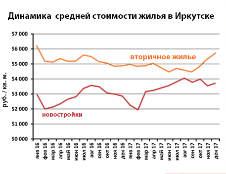
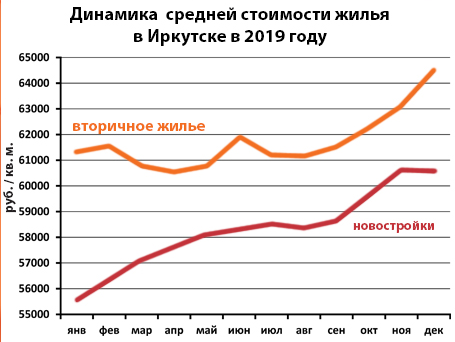
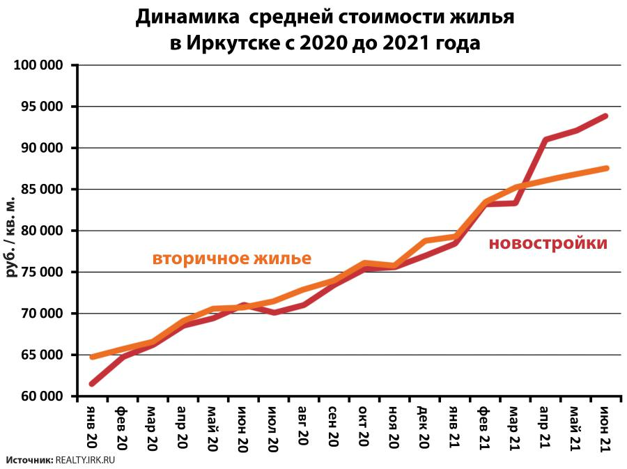
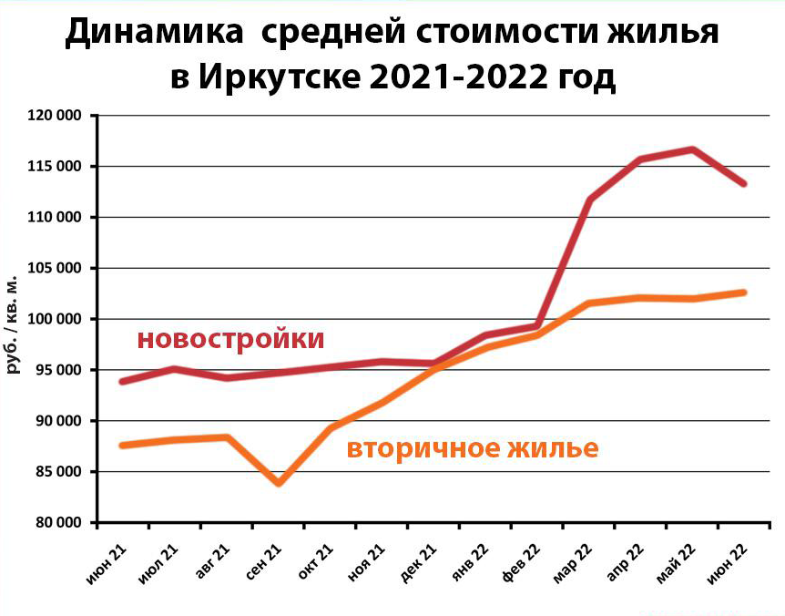

Графики цен на недвижимость в городе Иркутск

Средняя стоимость квадратного метра на вторичном рынке Иркутска за 2018 год, увеличилась в среднем на 5,1 тыс.рублей, до 60,89 тыс.рублей. Средняя стоимость квадратного метра в новостройках Иркутска, за год увеличилась на 1,45 тыс.рублей, до 54,82 тыс.рублей. В Ленинском районе цены на новое жилье за год выросли на 7,6%, в Октябрьском районе - на 7,5%, в Куйбышевском – на 6,4 %, в Кировском – на 4,5%, в Свердловском - на 0,8%.

Средняя стоимость квадратного метра на вторичном рынке Иркутска за 2019 год, увеличилась в среднем на 5,4%, до 64,46 тыс.рублей. В Свердловском районе квадратный метр за год вырос в цене на 8,3%, в Октябрьском – на 7,8%, в Ленинском – на 3,4%, в Кировском – на 0,6%. В Куйбышевском районе отмечено снижение на 0,9%.

Квартиры в Иркутске снова подорожали.За июнь 2021 года средняя стоимость вторичного жилья подросла на 0,8%, новостроек – на 1,9%. А с начала года «вторичка» выросла в цене на 12%, новостройки – на 21%. Средняя стоимость квадратного метра вторичного жилья в Иркутске, за июнь подросла на 0,8%, до 87,55 тыс.рублей.
В Октябрьском районе квартиры выросли в цене на 1,4%, в Ленинском – на 0,9%, в Свердловском – на 0,6%, в Куйбышевском – на 0,2%. В Кировском районе стоимость вторичного жилья в прошлом месяце снизилась - на 0,5%

Средняя стоимость квадратного метра вторичного жилья в Иркутске,во втором квартале прибавила 0,7% и достигла отметки 102,95 тыс.руб.В Кировском районе квартиры на вторичном рынке подорожали за три последних месяца на 5,5%,в Куйбышевском - на 3,4%,Свердловском - на 1,2%,в Ленинском - на 1%.В Октябрьском районе отмечено небольшое снижение - на 0,6%.
Вывод
Оценив графики можно сделать вывод. Что скорее всего, в 2023 году рост цен составит как минимум 5–7%. Также будут постепенно создаваться возможности для производства своих стройматериалов и транспортировки их из-за границы. Льготную ипотеку продлили, но пока всего на полтора года, при этом подняли ставку с 7 до 8%. Такие тенденции говорят о том, что рынок недвижимости в 2023 году может вырасти, а особенно — стоимость жилья бизнес-класса в Москве.